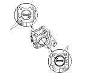

Intake Shutter Valve (ISV) Cleaning
Do not insert your fingers into the installed intake shutter valve when you turn the ignition switch ON (II) or while the ignition switch ON (II). If you do, you will seriously injure your finger if the intake shutter valve is activated.
Check for damage to the air cleaner element.
If the air cleaner element is damaged, replace it.
Remove the intake shutter valve.
Wipe off the carbon from the valve and inside the intake shutter valve with a paper towel soaked in throttle plate and induction cleaner.
NOTE:
Remove the intake shutter valve to clean it.
Be careful not to pinch your fingers.
To avoid removing the molybdenum coating, do not clean the bearing area of the throttle shaft (A).
Do not spray throttle plate and induction cleaner directly on the intake shutter valve.
Use Honda genuine throttle plate and induction cleaner.
Install the intake shutter valve.
